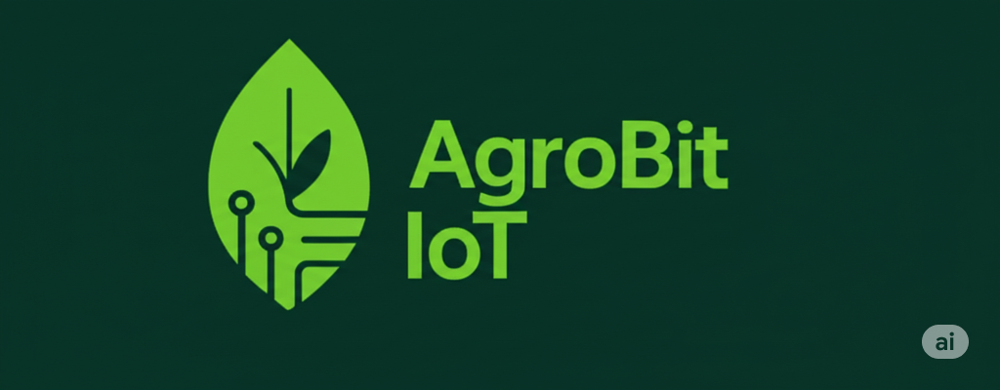

🌿 AgroBit
En AgroBit IoT, nuestra misión es impulsar una revolución en la agricultura a través de la integración inteligente del Internet de las Cosas.
Creemos firmemente en un futuro donde la tecnología y la sostenibilidad se fusionan para optimizar la producción de alimentos, reducir el impacto ambiental y empoderar a los agricultores.
Nuestra visión es ser líderes en soluciones IoT para la agricultura, brindando herramientas innovadoras y accesibles para decisiones más inteligentes y cultivos más eficientes.
Explora nuestras soluciones organizadas por categorías: sensores, módulos de control y tecnología sostenible para una agricultura inteligente.
Ofrecemos sensores de humedad del suelo de alta precisión, ideales para monitoreo en tiempo real. Puedes adquirirlos por separado o en kits completos con conectividad.
Dispositivos ideales para medir la temperatura del ambiente y del suelo, con opciones digitales y resistencia al agua.
Dispositivo central que conecta y gestiona sensores, actuadores y la plataforma de nube AgroBit. Ideal para cultivos automatizados.
Sistemas de alimentación autónomos para zonas rurales sin acceso a red eléctrica.
Los pequeños y medianos productores agrícolas enfrentan desafíos diarios en el manejo eficiente del agua, la temperatura y la salud del cultivo. AgroBit proporciona soluciones accesibles y confiables para ayudarlos a mejorar su producción.
Contamos con una variedad de sensores de humedad, temperatura y exposición solar que permiten monitorear el estado del cultivo en tiempo real. Estos dispositivos facilitan el riego preciso, la prevención de enfermedades y el aumento del rendimiento, sin necesidad de conocimientos técnicos avanzados.
Este segmento está enfocado en universidades, colegios técnicos, centros de formación agrícola y grupos de investigación interesados en aplicar tecnología de punta en sus procesos educativos y científicos.
AgroBit ofrece kits didácticos con sensores personalizables, módulos programables y acceso a plataformas de visualización de datos. Estas herramientas permiten desarrollar proyectos de investigación, prototipos tecnológicos y experiencias prácticas en el aula.
Las grandes empresas del sector agroindustrial requieren soluciones integradas, escalables y con alta capacidad de procesamiento y monitoreo para cultivos extensivos o sistemas de producción complejos.
En AgroBit diseñamos sistemas a medida que permiten supervisar múltiples variables (clima, humedad, temperatura, presión, pH, entre otras) desde un solo panel de control. Integramos conectividad con la nube, almacenamiento de datos y análisis predictivo, garantizando trazabilidad y eficiencia en toda la operación agrícola.

Este dispositivo cuenta con la capacidad de medir temparatura y exposicion a los rayos uv, ademas cuenta con la capacidad de enviar datos y almacenarlos en la nube, cuenta con una bateria interna de larga duracion
$65.500

Placa controladora de temperatura digital LED azul W1209, microtermostato, control electrónico de temperatura, 12 V DC, módulo de sensor con relé de un canal
$46.800

¡Potencia tu Cultivo con el Centro de Control Inteligente IoT! Lleva tu cultivo al siguiente nivel con este avanzado centro de control diseñado para la agricultura inteligente. Este sistema integrado recopila datos cruciales de tu entorno de cultivo, toma decisiones autónomas para mantener las condiciones óptimas y, además, te permite monitorear y analizar el rendimiento a través de la nube.
$150.000
Ofrecemos asesoría personalizada para integrar soluciones IoT en proyectos agrícolas. Desde la selección de sensores adecuados hasta el diseño de sistemas completos para automatización y monitoreo.
Contamos con personal capacitado para la instalación de sensores, estaciones y centros de control en campo. Además, brindamos soporte remoto y mantenimiento preventivo de equipos.
Impartimos talleres y cursos sobre uso de sensores, plataformas de monitoreo y programación de módulos IoT, dirigidos a agricultores, docentes o estudiantes.
Diseñamos aplicaciones a medida para visualizar, analizar y gestionar los datos de tu cultivo, con acceso web y móvil. También integramos nuestros dispositivos con sistemas existentes.
Con nuestra plataforma en la nube puedes acceder a los datos de tu cultivo desde cualquier lugar. Ofrecemos dashboards, alertas y reportes automáticos.
Soluciones inteligentes para optimizar tu producción agrícola